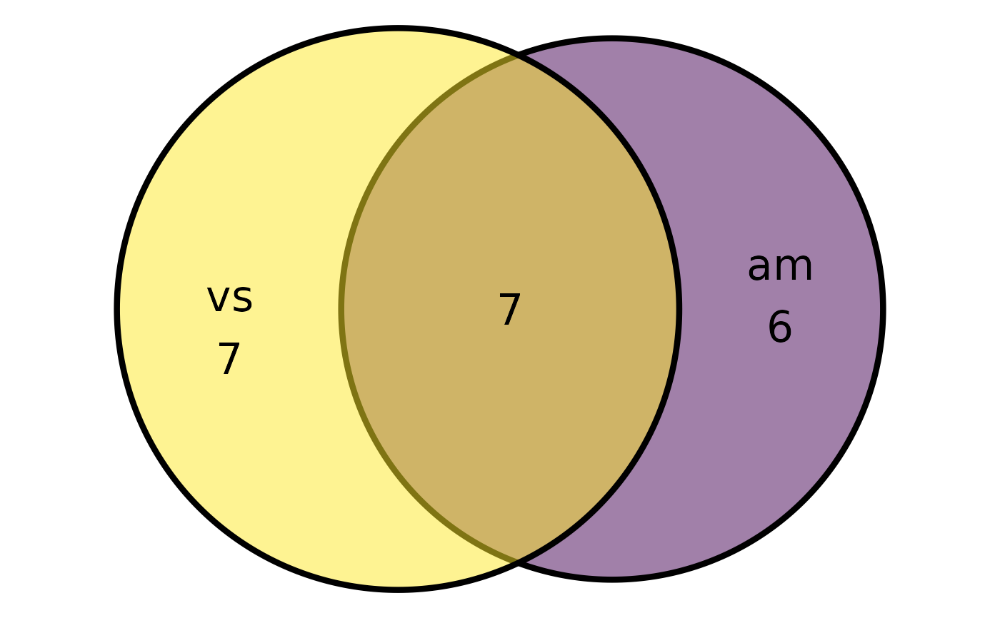
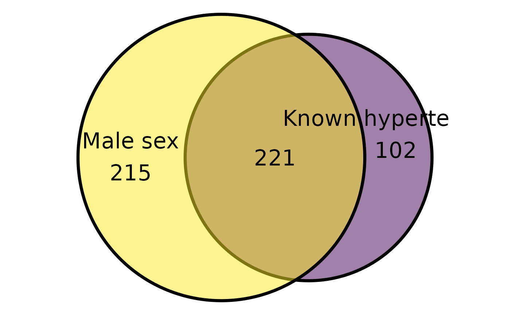
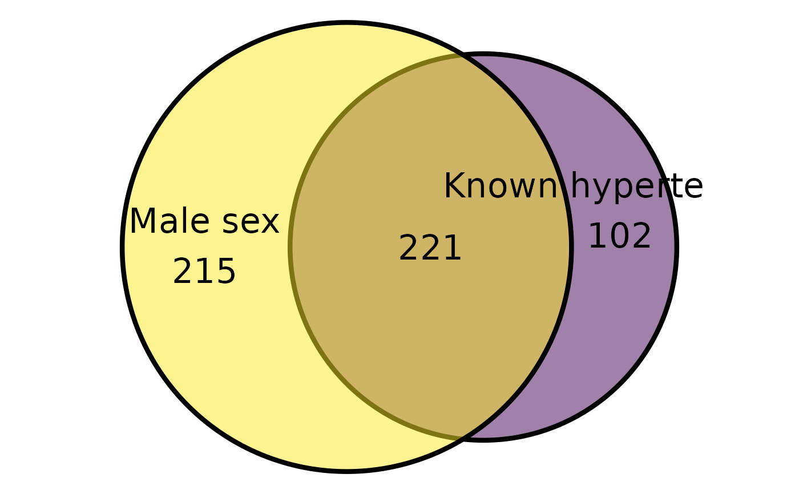

Easily plot euler diagrams
Examples
data.frame(
A = sample(c(TRUE, TRUE, FALSE), 50, TRUE),
B = sample(c("A", "C"), 50, TRUE),
C = sample(c(TRUE, FALSE, FALSE, FALSE), 50, TRUE),
D = sample(c(TRUE, FALSE, FALSE, FALSE), 50, TRUE)
) |> plot_euler("A", c("B", "C"), "D", seed = 4)
#> Error in plot_euler(data.frame(A = sample(c(TRUE, TRUE, FALSE), 50, TRUE), B = sample(c("A", "C"), 50, TRUE), C = sample(c(TRUE, FALSE, FALSE, FALSE), 50, TRUE), D = sample(c(TRUE, FALSE, FALSE, FALSE), 50, TRUE)), "A", c("B", "C"), "D", seed = 4): object 'i18n' not found
mtcars |> plot_euler("vs", "am", seed = 1)

mtcars |> plot_euler("vs", "am", "cyl", seed = 1)
#> Error in plot_euler(mtcars, "vs", "am", "cyl", seed = 1): object 'i18n' not found
stRoke::trial |>
dplyr::mutate(
mfi_cut = cut(mfi_6, c(0, 12, max(mfi_6, na.rm = TRUE))),
mdi_cut = cut(mdi_6, c(0, 20, max(mdi_6, na.rm = TRUE)))
) |>
purrr::map2(
c(sapply(stRoke::trial, \(.x)REDCapCAST::get_attr(.x, attr = "label")), "Fatigue", "Depression"),
\(.x, .y){
REDCapCAST::set_attr(.x, .y, "label")
}
) |>
dplyr::bind_cols() |>
plot_euler("mfi_cut", "mdi_cut")
 stRoke::trial |>
plot_euler(pri="male", sec=c("hypertension"))

stRoke::trial |>
plot_euler(pri="male", sec=c("hypertension"))
